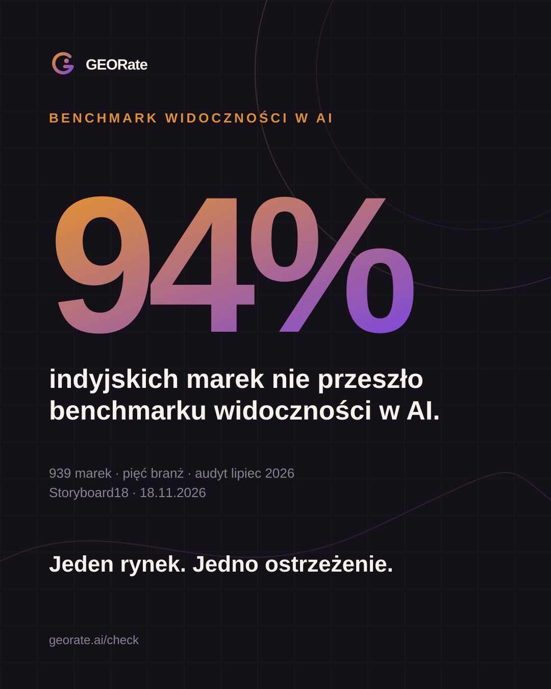
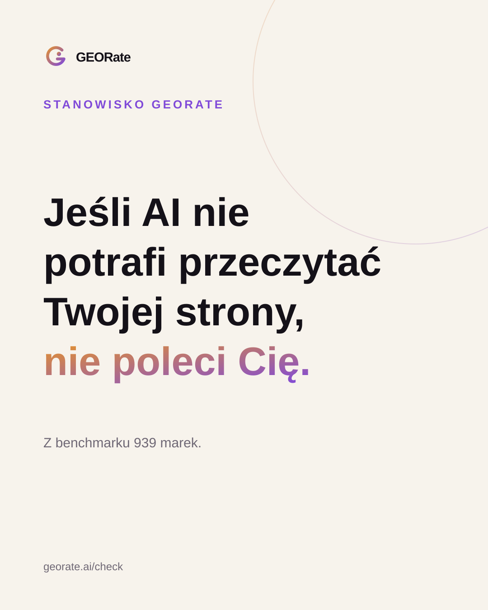
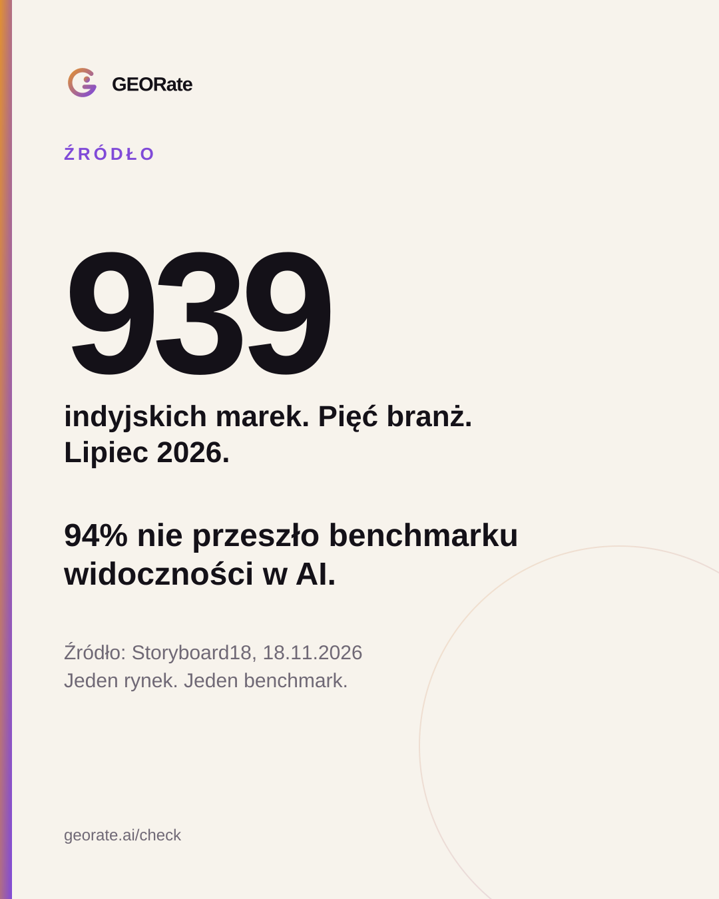
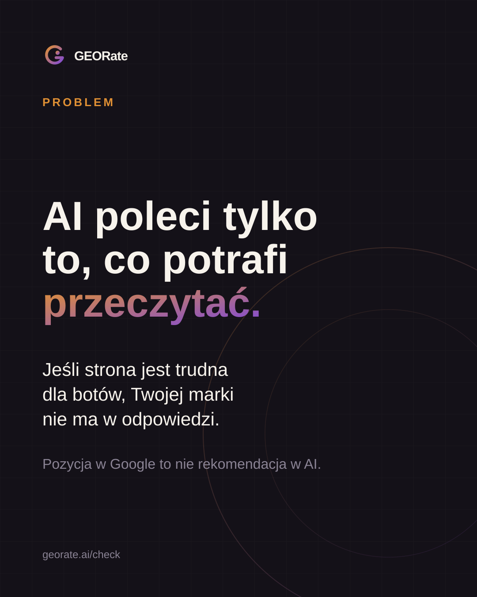
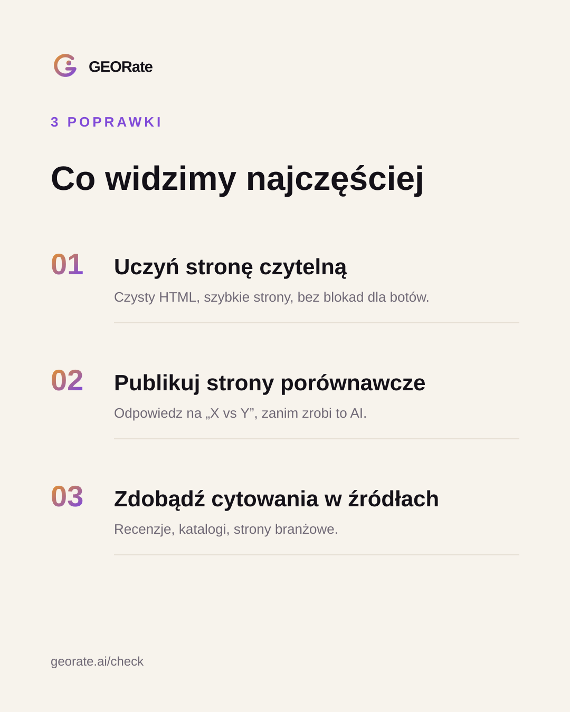
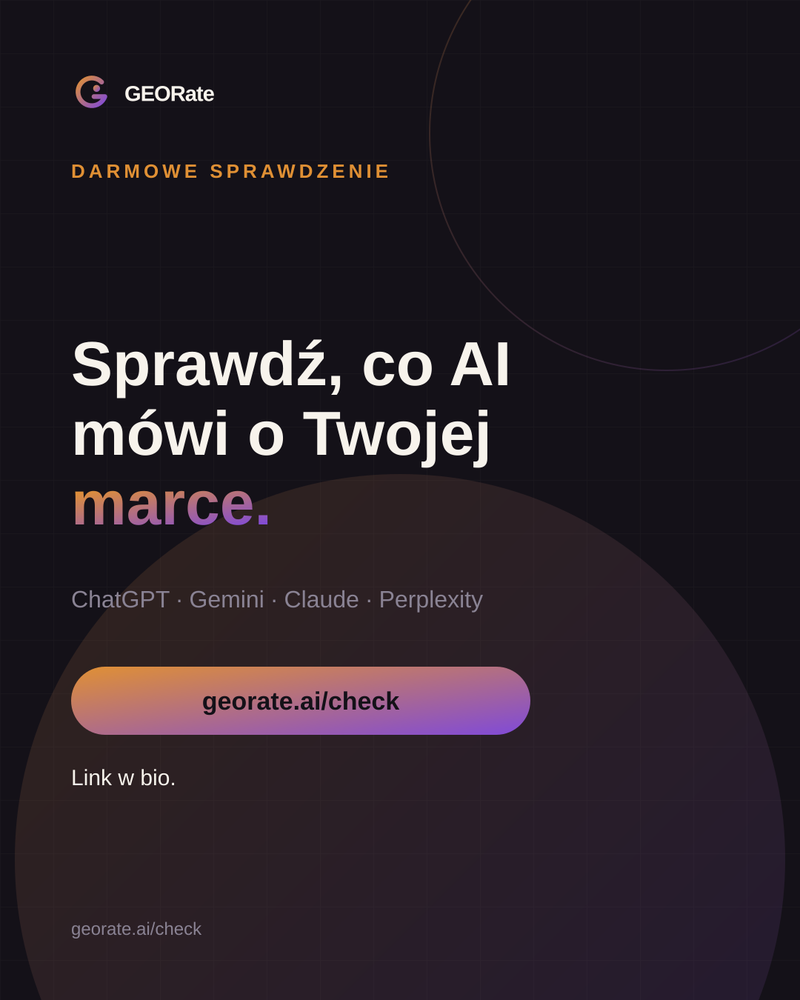
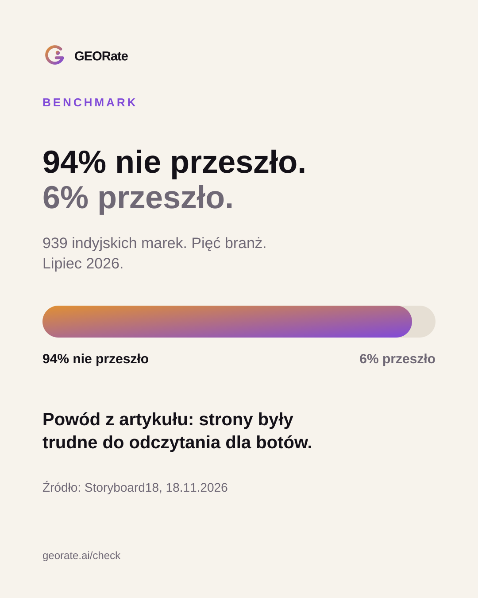

GEORate — marketing
Zatwierdzone assety
Publiczne, gotowe do publikacji grafiki i copy. Strategia, drafty i notatki wewnętrzne zostają w prywatnym repo.
Kampania
ai-visibility-94
Storyboard18, 18.11.2026. Audyt 939 indyjskich marek w pięciu branżach (lipiec 2026). 94% nie przeszło podstawowego benchmarku widoczności w AI. Powód z artykułu: strony były trudne do odczytania dla botów.
LinkedIn — post Instagram — carousel Alt text Metadane


Instagram — carousel





